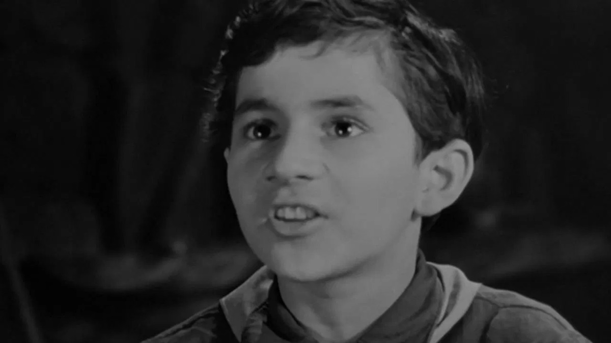

Միշա Հովսեփյան
Կենսագրություն
Միքայել Հովսեփյանը ծնվել է 1953 թվականի մայիսի 21-ին Երևանում, Հայաստան, ԽՍՀՄ։ Եղել է դերասան, հայտնի Հովիկի դերով Եռանկյունի ֆիլմում (1967)։
Մահացել է 1991 թվականի փետրվարի 12-ին Երևանում։
Միքայել Հովսեփյանը ծնվել է 1953 թվականի մայիսի 21-ին Երևանում, Հայաստան, ԽՍՀՄ։ Եղել է դերասան, հայտնի Հովիկի դերով Եռանկյունի ֆիլմում (1967)։
Մահացել է 1991 թվականի փետրվարի 12-ին Երևանում։